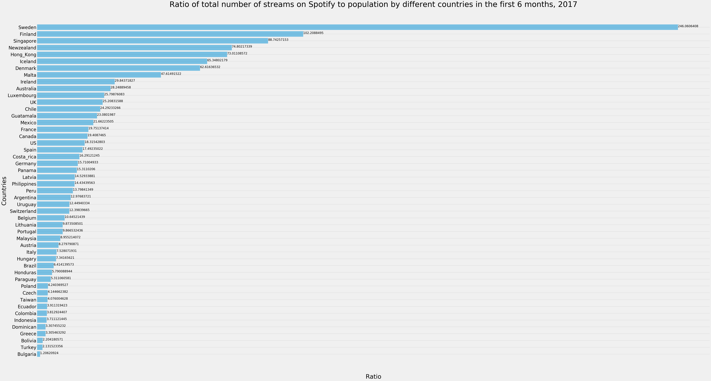
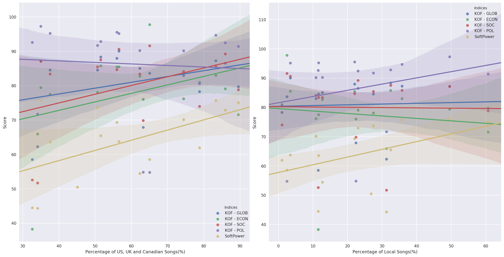
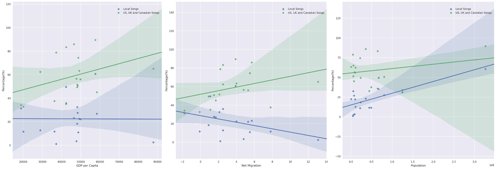

Local analysis


Click the button to see different countries' pie charts
Methodologies
The first step was identifying the countries that most actively use Spotify, in order to obtain an analysis that can be generalized to their music scene. We did so by calculating the total number of streams of all songs in the first 23 weeks of 2017 in different countries, and normalized them by dividing the streams by the local population, to obtain the “ratio” that represents the local usage of Spotify. Using glob, Pandas, Numpy and matplotlib to import, clean and visualize data, we presented the results in the form of a horizontal bar-graph:

Bar chart of streams-to-population ratio
From the countries showing high streams-to-population ratios we chose a diverse sample of 18 countries based on geographical area (e.g. Denmark and Hong-Kong) and size of the country (e.g. France and Portugal), whose pie charts are shown above.
Using Pandas and Numpy in Python, we then merged a dataset of the songs’ origin with the Spotify dataset and cleaned it so that each song’s name was associated to its country of production. This process involved a looping function that assign the country of origin to a song if it has already existed in the dataset so as to avoid repetitive work (shown below). This allowed us to retrieve a “song diversity index”, based on the part of local songs over the part of foreign songs that made the top 200 in the past year. We then used matplotlib to create pie charts above to visualize the origin of the songs listened to in each of the 18 countries.

The looping technique that assigns each song with its country of origin
Finally, using the Python seaborn library, which is a powerful library in making the visualizations containing statistical elements, we created linear regressions comparing different indexes such as the globalisation and migration indexes to our song diversity index, in order to establish whether a correlation exists between certain social aspects of the country and its musical scene.
Analysis
In much of our analysis of the pie charts we have developed for each individual country we have made use of the Stirling (2007) model of diversity, developed in such a way that the term can be understood in multidisciplinary narratives. This model splits up diversity into three factors: Variety, Balance, and Disparity.
Variety refers to the number of different categories within a system. For our purposes this represents the number of different countries shown on a pie chart. Argentina offers an example of a graph with a high level of Variety, 8 different countries appear on the chart, while the US has a low level of Variety, 3 countries appear on the chart.
Balance refers to the number of different types of element within a system: “It is the answer to the question: ‘how much of each type of thing do we have’”. Within the context of our pie charts this applies to the proportion of songs from any given country. For instance, in perfectly balanced pie chart with a variety of 5 countries, each country would contribute 20% of the songs listened to (See the pie chart for Mexico). In an unbalanced pie chart the majority of the songs would come from one or two countries (see the pie charts for the US or the UK).
Disparity refers to the “manner and degree with which the elements might be distinguished” within the system. For our pie charts this is represented both by where the music comes from and what language the music is in. An example of a high level of disparity would be Singapore, listening to music in many different languages from all over the world. An example of a low level of Disparity would be the US, where our pie chart shows the vast majority of songs are in English.
An increase in any one of these factors would lead to an increase in diversity of the system. It is important to note, we are not correlating a diverse pie chart as a “good” sign and a non-diverse pie chart as a “bad” sign. We are simply using this model of diversity as it elucidates comparisons.
Argentina
Argentina’s pie chart shows a high level of diversity and an average level of local songs listened to. Not only are there a high number of countries above 1.5% (8) but also the graph is balanced with 5 countries accounting for over 10% of songs in the charts individually. The disparity of the songs is fairly low, all of the songs appearing on the graph are written in either Spanish or English. It is useful to compare this pie chart with those of Mexico and Spain as both have similar levels of diversity. That all of these countries have Spanish as their official language is important. Unlike English speaking countries however, one or two countries do not hegemonize their listening habits. Their high levels of balance show this.
Australia
Australia’s pie chart shows a fairly low level of diversity. The listening habits are unbalanced with music from the UK, US and Canada accounting for almost ¾ of the songs appearing in the charts. Furthermore, there is a very low level of variety with over 96% of songs from English speaking countries. An interesting chart to compare this to is that of New Zealand, showing similar low levels of diversity. Both are dominated by music from the US, UK and Canada and the English language. Unlike New Zealand however, Australia’s own music appears on the chart.
Austria
Austria’s chart is diverse and yet unbalanced with the US and UK making up over 40% of the music listened to. The population listens to music from many different countries in many different languages. While there are a variety of languages, most of the music comes from Europe. The large percentage of German music shows the impact of shared language. Austria also fails to figure heavily in the chart, accounting for only 3.41%, this can be compared to the effect of shared language on Australia and New Zealand.
Canada
Canada’s pie chart reveals their overall music taste to not be very diverse in terms of where it comes from. The vast majority of the music is in English, and almost all from the US and the UK. This is common with all of the other English speaking countries we have produced graphs for.
Denmark
Denmark listens to a lot of local music compared to countries of a similar population and geographic location. Like with many of the European countries studied (France, Germany, Iceland, Portugal), other than music produced locally, music from the US, UK and Canada dominates their charts. Their chart is thus not particularly diverse.
France
France’s pie chart is almost unique. Apart from the US, local music makes up the largest percentage of all the countries we’ve studied. This is perhaps due to measures put in place by the French government in the latter half of the 20th century in an attempt to prevent the hegemonization of their musical culture by the US and the UK. For example, French radio stations were forced to play a certain number of French songs every hour (Verboord and Brandillero). The appearance of Belgium on the chart further speaks to the importance of language in music.
Germany
Germany’s pie chart indicates a fairly high level of diversity. While the chart is unbalanced there is a high level of variety, 7 countries, and a high level of disparity, 4 languages. Local music also accounts for a large percentage of chart music at 27%.
Hong Kong
Hong Kong’s pie chart is one of the most diverse of all countries studied. While unbalanced towards Local and US music, music from 9 different countries appears in 6 different languages. These high levels of variety and diversity are common with both of the other Asian countries studied (Singapore and Taiwan).
Iceland
Iceland’s chart is similar to the other continental European countries studied. It maintains a fairly high level of local music in its charts but the rest is dominated by the US, UK and Canada.
Mexico
Like the charts for both Argentina and Spain, Mexico’s is very diverse. Like Argentina’s, it is one of the most balanced and is dominated by the languages of Spanish and English. Though they do not appear on the chart as they account for less than 2% of streams individually, the rest of the music listened to is primarily from Spanish speaking, Latin American countries.
New Zealand
New Zealand’s chart is very similar to Australia’s in all aspects bar the lack of local music. It is unbalanced towards the UK, US and Canada and has a low level of disparity and variety. This, along with Australia’s, suggests the impact of language on a country’s listening habits.
Portugal
Portugal’s music, other than that which is local, is dominated by the US, UK and Canada and thus the chart is unbalanced. It is useful to compare the chart to other continental European countries, as they are similarly unbalanced with the vast majority of non-local music being in English. The Spanish language music that appears on the chart suggests the influence of geography but also similarities in Language.
Singapore
While unbalanced towards the US and UK, Singapore’s chart shows similar levels of diversity to the two other Asian countries studied. Like Hong Kong and Taiwan, there are high levels of variety and disparity, with music coming from 9 countries and in 6 different languages. It is also interesting to consider the chart alongside that of Austria, also with high disparity, as both countries have 4 official languages. Local music from Singapore is insignificant on the chart.
Spain
Spain’s chart, like that of Mexico and Argentina (also Spanish speaking), is one of the most balanced with only the US accounting for more than 20% of music appearing on the Spotify charts, neither is it dominated by local music. Music from Latin America features heavily and like the charts of Mexico and Argentina, the only languages that appear are Spanish and English.
Sweden
Sweden is similar to other continental European countries in that other than local music, the chart is unbalanced towards music from the US and the UK.
Taiwan
Taiwan’s chart is most similar to that of Hong Kong, also having a strong local influence, but shares the variety and disparity of Singapore’s too. While unbalanced towards local, US and UK music it features music from a large number of countries (9) and in many different languages (5).
United Kingdom
The United Kingdom is second only behind the US in terms of lack of diversity of music listened to on Spotify. While the chart is more balanced than the US, it has very low variety (4 countries) and low diversity (all songs are from English speaking countries excepting Sweden).
United States
The chart for the US indicates the lowest level of diversity of all countries studied. The chart is completely dominated by local music and all music is from English speaking countries.
Overall
Through our analysis of each country’s pie chart certain trends have appeared:
• European countries seem to be able to maintain local music’s popularity in charts but the rest of the music that reaches the Spotify charts is mostly from the United States and the UK.
France falls into this trend. The prominence of local music cannot only be put down to language, however, as over the latter half of the 20th century the French government created laws for radio stations designed to preserve the country’s own musical culture.
Austria seems to be an exception to this rule, with little Austrian music appearing in the Spotify charts, instead most of the music comes from Germany. An explanation for this can perhaps be found in the shared language between the two countries.
• The Spotify charts of English speaking countries are almost completely dominated by English music.
The Spotify charts of New Zealand and Australia are evidence of UK and US hegemony of musical culture.
• Spanish speaking countries have the most balanced charts with music coming from many different countries
It is interesting to compare these Spanish-speaking countries with Australia and New Zealand, as their charts are not dominated by any other country.
• The Spotify charts of Asian Countries we studied had a high variety and high disparity.
Overall, that which emerged from this level of analysis is the importance of language as it appears to be a determining factor in where the music in a given country’s Spotify charts comes from.
It is due to the emergence of language’s importance that we decided to move forward with semantic analysis of songs. We hoped that this semantic analysis would further elucidate language’s importance; whether it was simply due to understanding of the songs, or whether certain themes were explored in some languages more than others.
Regression Analysis

Globalization indices against percentage of songs

Percentage of songs against GDP, net migration and population
As the above charts show, there is no clear correlation between a single index and either the percentage of local songs in a country’s Spotify charts, or the percentage of songs from English speaking countries. This suggests that there is no direct of obvious relationship between these indexes and a given countries listening habits. This may in part be due to limitations of our dataset. We only examined 18 countries and some of these countries did not have data available for certain indexes.
Nevertheless, the lack of any clear correlation suggests the complexity of the system that affects the listening habits of people in a given country.